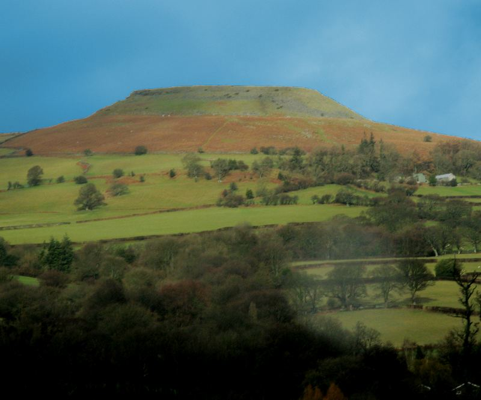
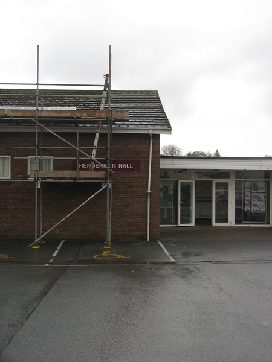

The 2014 LBW is planned for 20th–26th July 2014 in the village of Talybont-on-Usk, Wales.
LBW is a week-long event which takes place in a different European country each summer, drawing together Open Source software enthusiasts from more than a dozen different countries, for a combination of talks, presentations, hands-on mini-projects, outdoor exercise, and good food and drink.
There is more information here.


Talybont-on-Usk, an agreeable village in Wales. It has a CAMRA award winning pub, a canal, a river, and the Brecon Beacons National Park almost on top of you.
There are both walks at altitude for active days, and walks along the river and canal for more relaxed days. There are also lots of less obvious things including cycling, canoeing and stargazing.
The local website has a handy travel guide.
The nearest railway station closed many years ago. The nearest useful railway station is at Abergavenny. Note that the town also has a Welsh name, Y Fenni. This should be a familiar concept for Belgians.
From Abergavenny, you can go …
The 43 / X43 bus runs through Talybont-on-Usk. It runs from Abergavenny (railway connection) to Brecon. Traveline Cymru provide local bus information in Wales. They cover various operating companies.
The nearest National Express coach stop is at Abergavenny.
The Monmouthshire & Brecon Canal runs through the Talybont-on-Usk. Unfortunately the canal is not currently connected to the rest of the network. Boats can be hired. It runs through the towns of Abergavenny and Pontypool, both of which can be reached by railway.
You could arrange your transport and accomodation in one swoop by hiring a narrow boat at Abergavenny or Pontypool, and navigating it North to Talybont-on-Usk. (You will need to move it every couple of days, if I remember the rules regarding mooring.)
Boats also also available localliy for day hire.
Point your sat-nav at the postcode LD3 7YQ. There is parking at the hall.
There are lots of twisty narrow roads in this area, a right-hand drive car may be preferable. (Or a motorbike!)
There is local car rental, including an electric car.
Nearby airports are Cardiff (CWL, 50 miles away), Bristol (BRS, 70 miles away), Birmingham (BHX, 110 miles away), the various London airports which may not be near London (Gatwick, Heathrow, City, Stansted, and Luton), Manchester (MAN, 170 miles away). There is also Robin Hood Airport slightly further away near Sheffield, but do take care not to hurt their feelings.
Talybont-on-Usk is different from Talybont, which is about 100 miles away.
You can contact the organisers at lbw2014@þþ.be. You can meet us in IRC at #lbw on OFTC. [% END %]